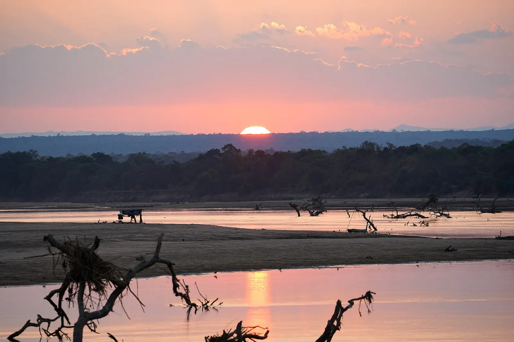
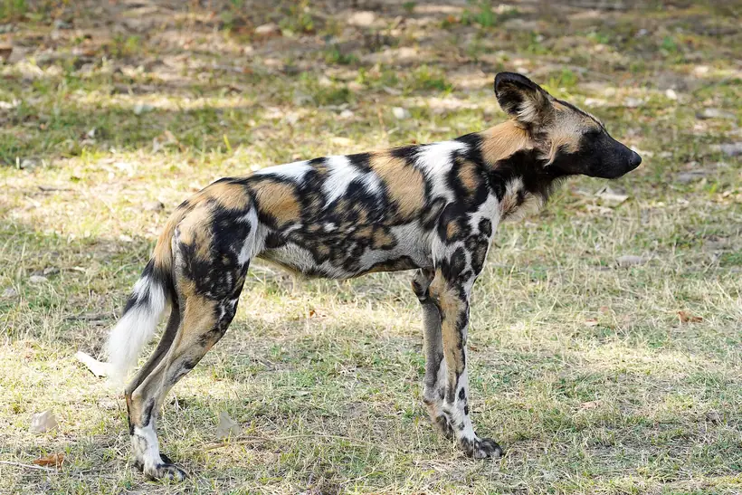
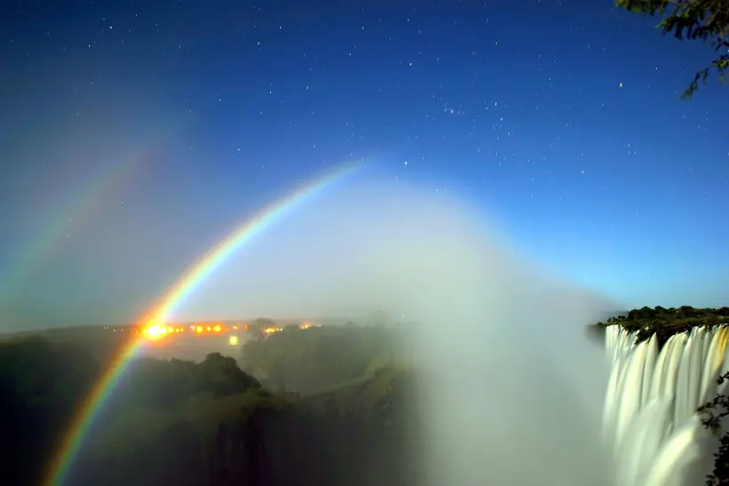

Zambie — South Luangwa & chutes Victoria
La Luangwa Sauvage & les Chutes
La Zambie garde le meilleur des safaris africains pour ceux qui marchent : c'est ici qu'est née la walking safari, et le South Luangwa en reste le sanctuaire. Six jours le long de la rivière, entre léopards, lycaons et girafes de Thornicroft, puis deux jours face aux chutes Victoria en pleine crue ou à l'étiage selon la saison. Un circuit pour voyageurs qui veulent de la brousse, pas un zoo.
Le circuit en bref
Durée
10 jours / 9 nuits
Confort
Confort premium — Lodges de charme & camps sous tente permanents
Tarif
5 990 € à partir de, par personne
Groupe
4 à 8 voyageurs
Meilleure période
Mai, Juin, Juil, Aoû, Sep, Oct
Prochains départs
6 juin 2026 · 11 juillet 2026 · 15 août 2026 · 19 septembre 2026

Ce que vous allez vivre
- Quatre walking safaris encadrées par des guides armés zambiens, spécialité nationale
- South Luangwa, l'un des derniers grands sanctuaires de lycaons (chiens sauvages)
- Night drives autorisés dans le parc : léopards, genettes et civettes à la lampe
- Girafes de Thornicroft et grands troupeaux de buffles, endémiques de la vallée
- Deux jours aux chutes Victoria, côté zambien, avec baignade possible dans les piscines naturelles en basse eau
- Croisière au coucher du soleil sur le Zambèze, hippopotames et crocodiles à l'eau
Le fil du voyage
- J1Arrivée à Lusaka — vol vers Mfuwe
- J3Walking safari — la signature zambienne
- J5Second walking safari — la forêt riveraine
- J7Dernière marche — vol vers Livingstone
- J9Zambèze — croisière & dernières heures
Jour par jour
L'itinéraire en détail
Un rythme pensé pour la lumière du matin et du soir — les heures où la savane s'anime.
-
Arrivée à Lusaka — vol vers Mfuwe
Accueil à l'aéroport de Lusaka et correspondance immédiate pour un vol intérieur d'une heure vingt vers Mfuwe, porte d'entrée du South Luangwa. Transfert d'une heure à travers les villages et les campagnes de la vallée. Installation au camp sur les berges de la rivière Luangwa, dîner aux flambeaux, bercé par les grognements des hippopotames dans la nuit.
Luangwa River Camp (camp sous tente permanent, South Luangwa) Dîner -
South Luangwa — première boucle & night drive
Game drive matinal le long de la rivière : les girafes de Thornicroft, endémiques de la vallée, se détachent contre les acacias dès le lever du soleil. Retour au camp pour le déjeuner et la sieste aux heures chaudes. En fin d'après-midi, départ pour un night drive, spécificité zambienne : la lampe spot révèle léopards en chasse, genettes et bushbabys aux yeux phosphorescents.
Luangwa River Camp (camp sous tente permanent, South Luangwa) Pension complète -
Walking safari — la signature zambienne
Première marche à pied, encadrée par un guide armé et un éclaireur : trois heures le long des lagunes asséchées, à lire les empreintes, approcher les buffles par le vent et écouter les alarmes des impalas. Le petit-déjeuner attend le groupe sous un figuier au bord de l'eau. Après-midi libre au camp, piscine et observation des hippopotames depuis la terrasse surplombant la rivière.
Luangwa River Camp (camp sous tente permanent, South Luangwa) Pension complète -
Boucle des lycaons
Journée dédiée aux chiens sauvages, dont le South Luangwa héberge quelques-unes des dernières grandes meutes d'Afrique australe. Les guides suivent les signalements radio et les pistes fraîches dans la zone de Nsefu, à l'est de la rivière. Pique-nique en brousse, patience et, souvent, la récompense : une meute au repos, puis soudain partie en chasse au galop. Retour au camp en fin de journée.
Luangwa River Camp (camp sous tente permanent, South Luangwa) Pension complète -
Second walking safari — la forêt riveraine
Nouvelle marche, cette fois dans la forêt riveraine où les éléphants creusent le sable pour trouver l'eau. Le guide explique l'écosystème de près : nid de fourmilion, fientes de touracos, ossements blanchis de buffles. Retour au camp pour le déjeuner, puis game drive en fin d'après-midi vers le barrage de Chilenje où les guépards chassent parfois au crépuscule.
Luangwa River Camp (camp sous tente permanent, South Luangwa) Pension complète -
Troisième walking safari & nuit en brousse
Marche du matin vers les plaines inondables, où les grandes hardes de buffles avancent en nuages de poussière. Transfert en début d'après-midi vers un camp plus profond dans le parc, installé sur une boucle de la rivière. Night drive le long des pistes de Nsefu : la zone est réputée pour ses léopards, observés presque chaque nuit à cette saison. Dîner aux flambeaux face au brame des hippopotames.
Nsefu Loop Camp (camp sous tente permanent, South Luangwa) Pension complète -
Dernière marche — vol vers Livingstone
Courte marche d'adieu au lever du soleil, autour du camp, à guetter les éléphants qui viennent boire à la lagune. Déjeuner puis transfert vers l'aérodrome de Mfuwe pour le vol de retour à Lusaka, avec correspondance vers Livingstone en fin d'après-midi. Installation dans un lodge face aux gorges du Zambèze, dîner servi sur la terrasse quand la brume des chutes s'élève au loin.
Zambezi Gorge Lodge (lodge de charme, Livingstone) Pension complète -
Chutes Victoria — face à la fumée qui tonne
Matinée entière aux chutes Victoria, côté zambien : un kilomètre et demi de parcours le long des gorges, où le Mosi-oa-Tunya — la fumée qui tonne — déverse ses colonnes de brume visibles à vingt kilomètres. Selon la saison, la baignade dans les piscines naturelles du bord (Devil's Pool) est possible de juin à septembre. Après-midi libre : hélicoptère optionnel, marché d'artisanat de Livingstone ou repos au bord de la piscine.
Zambezi Gorge Lodge (lodge de charme, Livingstone) Petit-déjeuner -
Zambèze — croisière & dernières heures
Matinée de détente au lodge, ou option rafting sur les rapides du Zambèze pour les plus courageux. En fin d'après-midi, croisière au coucher de soleil sur le fleuve : girafes et zèbres sur les îles, hippopotames à l'eau, et le soleil qui s'éteint derrière la savane. Dîner d'adieu au lodge, face aux gorges.
Zambezi Gorge Lodge (lodge de charme, Livingstone) Pension complète -
Départ
Matinée calme au lodge jusqu'au transfert vers l'aéroport de Livingstone, à vingt minutes de route. Vol de correspondance vers Lusaka puis connexion internationale. Assistance à l'enregistrement et envol.
— Petit-déjeuner
Galerie
En images, sans retouche




Ce qui est inclus
Inclus dans le tarif
- Vols intérieurs Lusaka – Mfuwe – Livingstone
- Pension selon programme (pension complète en safari)
- Guides zambiens armés certifiés pour les walking safaris
- Véhicule 4x4 ouvert et night drives autorisés dans le parc
- Droits d'entrée du South Luangwa et des chutes Victoria
- Trois walking safaris encadrées et une nuit en camp profond
- Croisière au coucher du soleil sur le Zambèze
Non inclus
- Vols internationaux aller-retour
- Visa zambien (visa électronique ou à l'arrivée)
- Assurance voyage et rapatriement (obligatoire pour la baignade et le rafting)
- Pourboires pour les guides, éclaireurs et personnel des camps
- Activités optionnelles : survol en hélicoptère, rafting, baignade au Devil's Pool
- Boissons premium et dépenses personnelles
Départs 2026
6 juin 202611 juillet 202615 août 202619 septembre 2026 — autres dates possibles en privé : demandez un départ sur mesure.

Horizons Sauvages
Ce circuit, votre version
Allongez une étape, changez un camp, ajoutez une extension balnéaire : tout se discute.